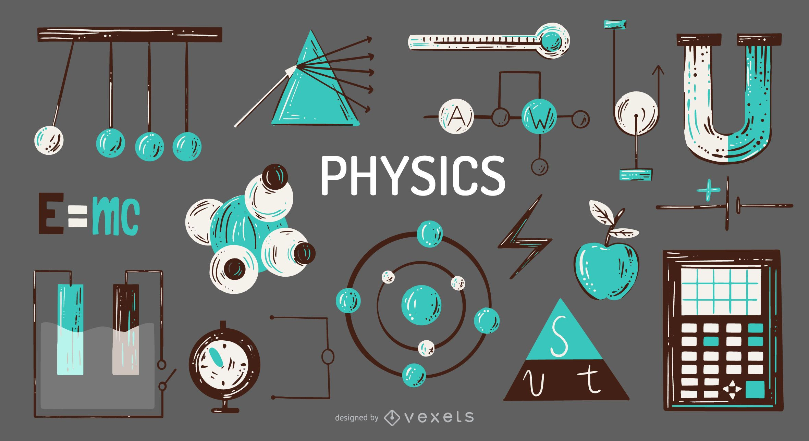

1
Analizar la problematica del manejo de los proyectos integradores

Buscar por medio del uso de una herramienta orienda al manejo de proyectos mejorar el estado organizacional del mismo apuntando a un dasarrollo optimo de las competencias propuestas en cada uno a su vez de mantener distintos enfoques que atraigan a la diversidad de las ideas a desarrollar
Analizar la problematica del manejo de los proyectos integradores
Medir la efectividad de la herramienta de seguridad a través de encuentas en conjuntos
Establecer por medio de un modelo fisico para el dasarrollo del proyecto adecuandolo a la tematica de la clase
